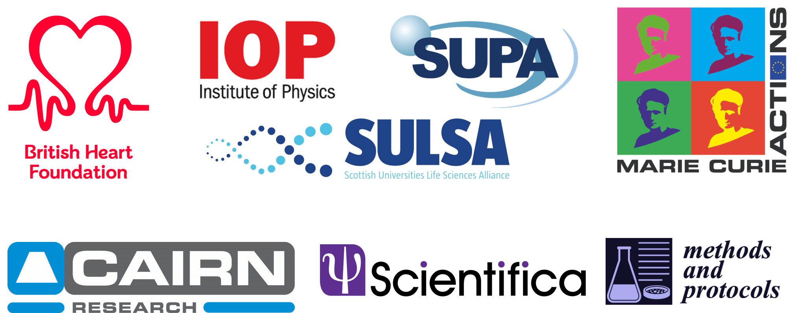

| Home | Registration | Program | Directions | Conduct |
NOTICE2020 is a small-scale symposium on novel optical technology for cardiac electrophysiology and aims to create a synergy between the strongest proponents of optical imaging, microscopy and manipulation technology applied to investigating the heart.
The workshop covers a broad range of topic from studying electrical activity, mechanical function and heart structure from the cellular scale to whole organ level. Topics range from super resolution techniques to coarse-resolution whole heart mapping, from imaging cardiac activity and correlating this activity to underlying structure to manipulating cardiac activity with optogenetics.
NOTICE2020 is the second instalment, after our successful inauguration event NOTICE 2018 in Florence.
NOTICE is proudly funden by the British Heart Foundation, SULSA and the IOP Optics Group and is greatful to its industrial sponsors: Cairn, Scientifica, Methods and Protocols.
| Design by Mike Pierce | © Conference Organizers |